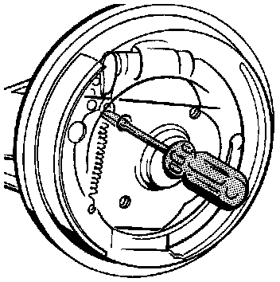

Operation CHARM
: Car repair manuals for everyone.
Home
>>
Volkswagen
>>
1997
>>
GTI (1H1) V6-2.8L (AAA)
>>
Repair and Diagnosis
>>
Brakes and Traction Control
>>
Drum Brake System
>>
Brake Shoe
>>
Adjustments
Brake Shoe: Adjustments
Adjusting
The
brake shoes
are self adjusting.
Adjustment Relieving
Rear Brake Adjustment Releasing:

Use a screwdriver working through wheel bolt hole to push adjusting wedge upward and back
brake shoes
away from drum.